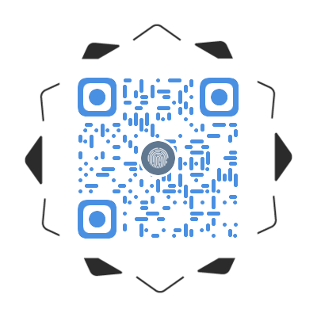

温智智
软件工程师 / 石家庄
基本信息
- 温智智 / 男 / 22岁
- CET-4
- 计算机四级
- 软件设计师
- 羽毛球、足球、跳绳
联系方式
技能点
个人主页二维码

其他
- jQuery、android、Bootstrap、SASS、spark、React
- Node.js、MySQL、MongoDB、WordPress、ThinkPHP
- Git、SVN、Markdown
教育经历
-
石家庄XX大学 - 软件工程专业（本科）
专业排名 2/102在校期间获得过中级软件设计师证书、英语四级证书、普通话证书、软件著作权等，获得过两次一等奖学金、三次二等奖学金、一次励志奖学金等等。获得参赛奖多于项
个人项目
-
[项目1]疫情可视化app 疫情可视化app博客链接
- 技术栈：python爬虫+柱形图展示+android
-
[目标]实现疫情数据的爬取、将数据通过柱形图展示出来
[团队]自己独立开发完成
[贡献]个人独立开发完成该项目 “调研-设计-实现-文档”具有初步设想、构思、爬虫、展示、具体编码实现
[效果]作品成功运行并上传到了github和发布相关的介绍博客
-
[项目2]家庭记账app 家庭记账app博客
- 技术栈：Android+echarts+listview
-
[目标]实现普通的记账功能，展示相关的记账数据给用户。
[团队]自己独立开发完成
[贡献]分析项目需求，制定设计方案、编码实现具体功能。 adnroid相关技术 和 ECharts 进行图形化展示以及实现简易自动分析功能
[效果]作品实现了相关的功能，完成了软件最初的设计目标，并将项目上传到了github。
-
[项目3]疫情数据可视化网页 疫情数据可视化网页链接
- 技术栈：HTML5+D3.js+ECharts+MySQL+python
-
[目标]爬取大量的疫情数据，通过折线图、柱形图、词云图、地图下钻等形式将疫情数据清晰的展示出来。
[团队]与2位同学
[贡献]分析项目需求，清洗并整理相关疫情数据，并用python爬虫和python数据清晰和 ECharts 进行图形化展示以及实现简易自动分析功能，可以实现地图的多级下钻。
[效果]作品成功发布到云服务器中，可以通过外网访问，获得网页设计大赛一等奖、计算机设计大赛一等奖。
-
[项目4]“keep running” 运动app “keep running” 运动app链接
- 技术栈：HTML5+android+ECharts+MySQL+高德地图
-
[目标]实时记录用户的运动轨迹、统计运动步数、展示运动情况、推荐运动饮食。
[团队]与2位
[贡献]分析项目需求、用户调研制、定软件开发计划、使用Android制作app用到了 ECharts 进行图形化展示以及实现简易自动分析功能，使用高德地图展示用户的运动情况和 实时记录用户的运动轨迹。
[效果]作品已经上传到github中，参加东软杯获得三等奖。
-
[项目4]桥梁智能监测和保护系统 ]桥梁智能监测和保护系统链接
- 技术栈：HTML5+python+ECharts+MySQL+高德地图+flask+layui
-
[目标]展示桥梁情况、智能预警、配置桥梁项目、创建桥梁管理、监测桥梁情况。
[团队]与5位
[贡献]分析项目需求、用户调研制、定软件开发计划、使用python用到flask框架制作web项目。用到了 ECharts 进行图形化展示以及实现简易自动分析功能，使用高德地图展示用户的项目位置，实现智能预警等相关功能，
[效果]作品已经上传到github中。
自我评价/期望
个人宣言：如果没有路、那就走出一条路。 “多静多思考，反省不张扬” 是我给自己总结的“十字箴言”. 鞭策自己做人既不能以己度人，也不以人观己，要脚踏实地做事，坚持自己的梦想和本心。 望自己继续努力、前程似锦！！！